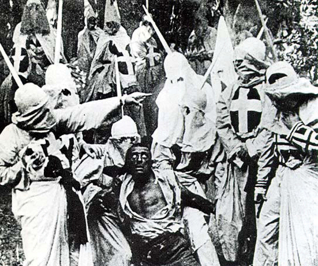

After reading this section, you should be able to answer the following questions:
New media are becoming important agents of political socialization because they host a great deal of political content and require the active engagement of users. Both news media and entertainment media provide depictions that influence political socialization, such as models of government leaders and citizen action.
People’s interactions with media are increasingly important to the process of political socialization. The explosion in communication technologies has resulted in people communicating less via face-to-face interactions with family members and peers and more through technological intermediaries, such as the Internet, cell phones, and personal digital devices. Even teachers find it increasingly difficult to compete with the communications technologies that command their students’ attention.
The Internet is a potentially powerful agent of political socialization because of the vast amount of political information available online and the fact that people actively engage with online platforms. Not only do people get information about government from news sites and blogs, they can post responses to stories and debate others through discussion forums. They also can use online media to actively take part in political processes, such as election campaigns.
Young people, in particular, use the Internet to learn about and participate in politics, although older people are going online for politics at an increasing rate. Evidence suggests that young people are developing their political identities online as they learn about the differences between candidates and political parties and acquire information about issues and political events. They use social media to create collaborative online communities that organize for political causes, lobby government, and campaign for candidates. All of these activities contribute to the socialization of engaged citizens.
Depictions of socialization and learning experiences abound in media. News and entertainment media are especially powerful as they provide depictions that embody the beliefs and values that make up American political culture. Core American values are crucial elements of a “good story,” as they resonate with the public. Both egalitarianism and individualism are celebrated in stories in which lone, ordinary people are able to defeat powerful economic and political forces aligned against them.
News media provide frequent depictions of political role models, including government leaders and citizens who are actively involved in community affairs. Politicians are often portrayed negatively, which can cause people to distrust leaders and lose faith in government. A prominent media frame portrays political leaders as constantly at odds and unable to reach civil agreement or compromise. This media frame is reinforced during elections when candidates attack their opponents unrelentingly in their stump speeches and ads.
Entertainment media provide depictions of core American values central to the political socialization process. Individualism is portrayed frequently in television dramas and comedies that tell stories of average citizens taking on the political and economic systems. Politicians can use entertainment media to convey an image of themselves embodying American values. Former Alaska governor Sarah Palin has cultivated an image of rugged individualism and self-reliance. She reinforced this image through the reality television program Sarah Palin’s Alaska.
Depictions can take the form of fictional dramas, such as Friday Night Lights’ portrayal of family life and the politics of sports in rural Texas, and sitcoms, or the offbeat view of parent-child relationships shown in Modern Family. Reality television programs such as Kate Plus 8 and Keeping Up with the Kardashians offer insights into family socialization that can invite commentary and criticism from viewers.
Children’s literature and movies feature many stoic, individualist characters. The classic film The Wizard of Oz (1939) has been called a tale of self-reliance. Dorothy, dropped from Kansas into Oz by a tornado, is advised that, to be able to return home, she should go to the Emerald City and appeal to the superior power, the Wizard of Oz. On the way there, she meets up with a Scarecrow desiring a brain, a Tin Man in search of a heart, and a Cowardly Lion in need of courage. The four meet a fearsome Wizard who orders them to bring back the broom of the Wicked Witch of the West. After a series of adventures, they return victorious to the Emerald City, only to find that the Wizard is nothing but a small man behind a curtain who has created an illusion of the “great and powerful Oz.” It turns out, he explains, that he was merely a lost itinerant balloonist who, upon descending from the clouds, was declared a Wizard by the credulous people. Dorothy and her friends learn that they each had the power they sought all along.
Teachers seeking to instill democratic and character values in their students have capitalized on the popularity of Harry Potter, the protagonist wizard in J. K. Rowling’s popular books. Harry has become a hero to children (and adults) who have read about his exploits. He embodies values of individualism and bravery tempered with humility. Young people can relate to Harry because in the world of the Muggles (those without magical powers), he is average and imperfect. Even among the wizards, he is not the smartest or the most talented. Yet he is able to handle extraordinary situations with bravery and skill. Harry’s heroism provides a civics lesson for readers because it illustrates the balance between the democratic values of individualism and egalitarianism. While Harry realizes that his magic powers give him the ability to distinguish himself, he chooses to include others—Hermione Granger, Ron and Ginny Weasley, and Neville Longbottom—as he fights against evil. Further, Harry does not seek public recognition for his acts of heroism.Jeffrey A. Becker, “Heroism and the Political Morality of Democracy in Harry Potter,” paper delivered at the Annual Meeting of the American Political Science Association, Boston, MA, August 29–September 1, 2002.
MTV’s series The Real World, which first aired in 1991, provides an intriguing look at the socialization experiences of groups of twentysomething strangers who live together for a year. The program provides insights into the effects of peers on the development of the housemates’ attitudes and behaviors. In the course of learning to adapt to new surroundings, live as a group, and find jobs, cast members deal with political issues. The San Francisco season attracted national media attention because it featured the house members grappling with the issue of HIV/AIDS when roommate Pedro, who worked as an AIDS educator and counselor, tested positive for the disease. Depictions related to subgroup relations and multiculturalism abound on The Real World. Cast members come from a variety of racial and ethnic backgrounds, which is a source of tension in the house. Almost every season involves a black male who stereotypically is alienated and confrontational. Most of the time, this character is shown talking about the societal injustices he suffers and picking fights with other house members. These confrontations force cast members to take sides and voice their opinions about race.
Parents and educators express concerns that socialization of young people via mass media contributes to a citizenry that is alienated from politics and distrusts government. Many of the media messages young people receive about politics are negative. They spend little time discussing these messages with other people or discovering the ways in which they can actively engage the political world. Alternatively, young people today are exposed to much more political media content than any prior generation. This exposure can contribute to greater awareness of government and opportunities for civic action. Digital communication technologies offer people increased opportunities for taking part in politics via media, such as posting to a blog or participating in a “tweetupAn online or offline meeting organized via the microblogging platform Twitter.,” using the microblogging platform Twitter to inform people about a political event taking place online or offline.
The influence of mass media on children’s attitudes toward leaders and government has become more negative over time, as media messages focus more on personal scandals and institutional dysfunction. For the most part, young children’s initial views of politics tend to be positive. Studies conducted in the 1960s showed that children idealized the president. They considered him a benevolent leaderA concept in which young children consider the president to be a personal friend who will do good things for the nation., someone who did good things for the country and would help a child personally. Even during the Watergate scandal of the 1970s, which involved a break-in at the Democratic National Committee headquarters and a cover-up by President Richard Nixon, children held strong, positive feelings about the office of the president. Children learned about President Nixon’s impeachment primarily from their parents and teachers, and not from the mass media. Media accounts focused on the political aspects of the Nixon impeachment, which went over the heads of most children. Many parents felt it was important to instill positive views of government in their children during this period of political upheaval.
The situation was much different in the 1990s when children learned about President Bill Clinton’s involvement with White House intern Monica Lewinsky, predominantly from nonstop, graphic television coverage that focused on Clinton’s personal life. Young children became disillusioned with President Clinton because they felt he had not told the truth. For the first time, children’s views of the sitting president, as well as their opinions about the institution of the presidency, were significantly more negative than those of their parents. Fewer children aspired to become president when they grew up.Diana Owen and Jack Dennis, “Kids and the Presidency: Assessing Clinton’s Legacy,” The Public Perspective 10, no. 3 (April–May 1999): 41–44.
The Payne Fund studiesResearch conducted between 1929 and 1933 that demonstrated the influence of movies on young people’s attitudes about racial groups, war, and crime. of motion pictures and youth, conducted between 1929 and 1933, provide early evidence that film can be a powerful agent of socialization. The studies found that people developed attitudes toward racial and ethnic groups, war, and crime based on their exposure to popular films. Audience members who saw the controversial film Birth of a Nation believed that blacks in the post–Civil War era were uncivilized and dangerous. Children who watched their favorite movie stars, such as James Cagney and Humphrey Bogart, playing criminals on screen imitated their behavior patterns by acting up in school.Garth Jowett, Ian C. Jarvic, and Kathy H. Fuller, Children and the Movies (New York: Cambridge, 1996).
Figure 6.12
Early research indicated that film could be an influential agent of political socialization. Negative attitudes toward African Americans were transmitted to audiences through the film Birth of a Nation.
Recognizing that film has the power to impart political messages to the public, officials in Washington have forged connections with the filmmaking community in Hollywood. The Hollywood-Washington connection dates back to the 1930s when President Herbert Hoover befriended MGM mogul Louis B. Mayer, whose studio produced many of the most popular films of the era. President Franklin D. Roosevelt realized that films could influence public perceptions of the Great Depression and the United States’ involvement in World War II. Roosevelt encouraged filmmakers to make movies with optimistic messages that would generate support for government action. The defeatist ending of director John Ford’s Oscar-winning film The Grapes of Wrath (1940), based on the John Steinbeck novel, was changed to depict the Joad family persevering despite terrible hardship, due to their inner strength. In addition to prowar documentaries such as Frank Capra’s Why We Fight series, Roosevelt requested that studio heads make popular films in support of the war effort. Films such as Confessions of a Nazi Spy depicted Germany as a nation out to destroy the American Constitution and the Bill of Rights. Anti-German messages were delivered in popular series films such as Tarzan Triumphs (1943), in which Tarzan and Cheetah fight Nazis who parachute into their jungle paradise.Clayton R. Koppes and Gregory D. Black, Hollywood Goes to War (New York: Free Press, 1987).
Immediately following the 9/11 terrorist attacks, representatives of Hollywood’s major studios, television networks, trade organizations, and the creative community met with senior White House officials to discuss how the entertainment community could help in the war against terror by emphasizing that the 9/11 attacks were an affront to civilization.“Hollywood Considers Role in War Effort,” CNN, November 12, 2001, http://www.cnn.com. Hollywood sought to define its political role while at the same time protecting its future at the box office. The first inclination was to feature comedy and fantasy fare that would be uplifting and noncontroversial. Films featuring terrorist themes—such as the Jennifer Lopez vehicle Tick Tock, which is about terrorists planting bombs in Los Angeles shopping malls, and Nose Bleed, a Jackie Chan movie about a window washer who discovers a plan to blow up the World Trade Center—were shelved. Images of the Twin Towers were removed from films set for release, such as Spiderman. However, video rentals of films featuring dramatic action and terrorist plots increased by 30 percent in the months directly following the attacks, which gave Hollywood an indication that the public would be receptive to more violent offerings.“Commercial Response to September 11,” NewsHour Online, October 24, 2001, http://www.pbs.org/newshour. War films with a patriotic theme, such as Behind Enemy Lines and The Last Castle, proved to be highly popular, and coincidentally, reinforced the messages suggested by the White House delegation.
Mass media have become compelling agencies of political learning, as young people spend a tremendous amount of time being exposed to television, the Internet, video games, and other media rather than interacting with other people. Media messages about politics are often negative, which may lead young people to become alienated from the political process. Young people, in particular, may learn a good deal about politics from entertainment and popular media.
Young people often have difficulty seeing the relevance of civic education to their immediate lives. Programs tend to emphasize future participation such as voting in presidential elections, which is an activity that students cannot engage in until they reach the age of eighteen. However, innovative curriculum projects can stimulate students’ interest in elections through meaningful campaign-related activities.
Kids Voting USA is a program initiated in 1988 that allows grade school teachers to use a curriculum designed around an election campaign. Students become involved by researching issues and preparing position papers, constructing informational websites, writing articles for newspapers, and serving as reporters on local television stations. On Election Day, children accompany parents to the polls and cast ballots in a special election. Children who participate are often motivated to turn out at elections when they reach voting age. In addition, children’s participation in Kids Voting USA stimulates parents’ interest in the campaign and voter turnout. Young people initiate discussions at home that are associated with their school projects. This enthusiasm for elections continues for some families after the program’s completion, especially among families of lower socioeconomic status who previously had little incentive for participating in politics.Michael McDevitt and Steven H. Chaffee, “Second-Chance Political Socialization: ‘Trickle-Up’ Effects of Children on Parents,” in Engaging the Public, ed. Thomas J. Johnson, Carol E. Hays, and Scott P. Hays (Lanham, MD: Rowman & Littlefield, 1998), 57–66.